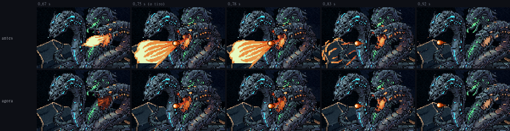
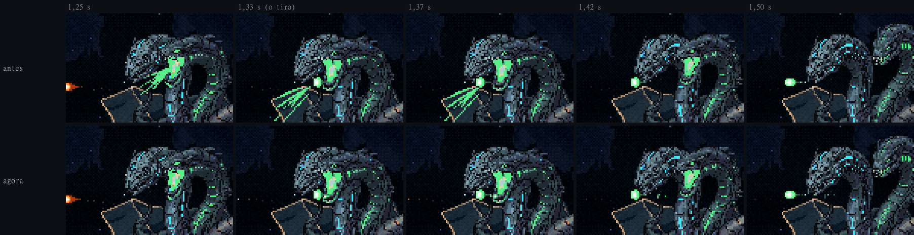
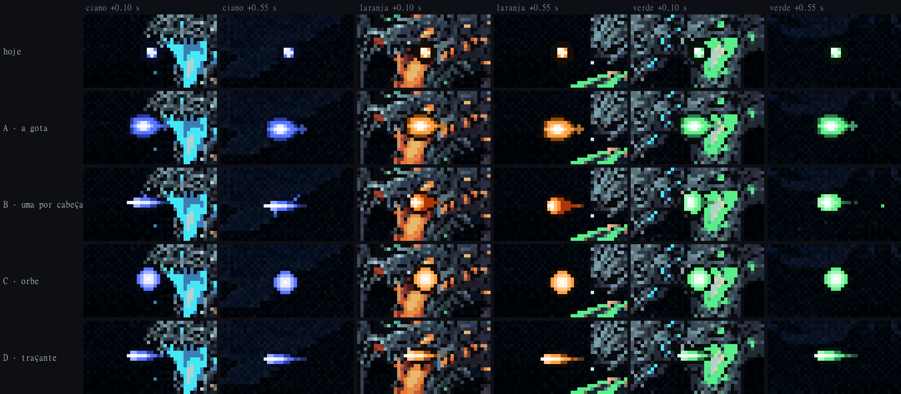
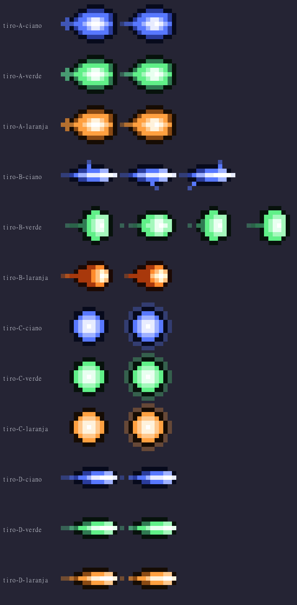
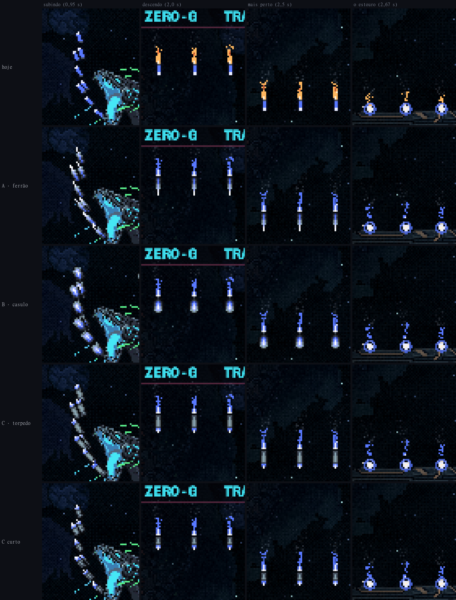
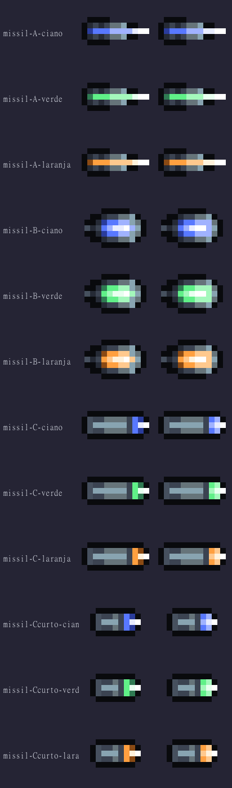

A Serpente: os projéteis
02/11/2026 · rodada 14 das habilidades: o desenho dos tiros normais e dos mísseis da chuva · nada foi commitado.
Sua resposta, e o cuspe mais discreto
Suas escolhas: tiros B, uma arma por cabeça; míssil B, o casulo; a chama do míssil na cor da cabeça. O próximo passo é instalar as habilidades no jogo.
Você também disse: "no movimento de atirar, a cabeça verde e a cabeça laranja soltam um efeito muito forte e grande, quero algo mais discreto, mantendo o movimento das cabeças". Era o efeito que o gerador pintou dentro da própria animação: a labareda, os anéis de explosão e as fagulhas da laranja, e os jatos da verde.
- Tirei só o efeito. O movimento das cabeças é o mesmo, quadro a quadro. Onde o efeito cobria o corpo (o pescoço e a cauda da azul, o pescoço da verde), o corpo foi reposto a partir do quadro limpo vizinho. A boca aberta e acesa faz parte do gesto e ficou: na laranja, a labareda que saía de dentro da boca virou a goela acesa, escura no quadro em que ela começa a abrir.
- No lugar, um efeito pequeno desenhado por código: um clarão de 3 px por um instante na boca. A laranja solta junto duas fagulhas e um fio de fumaça, e a verde três gotinhas.
- A azul ficou como estava, porque você não falou dela. Ela ainda tem o cuspe azul do gerador no quadro em que atira. Se quiser, eu limpo do mesmo jeito.
- Corrigi um erro meu: nos vídeos de antes, o tiro saía da boca do idle, e não da boca no quadro do gesto. Na laranja, que avança para atirar, a diferença era de 36 px. Agora cada tiro sai da boca onde ela está.


A rodada 14, como foi mostrada
Os tiros e os mísseis ainda estavam provisórios na maquete: o tiro era um ponto de 3 px e o míssil um traço de 7×2. Desenhei 4 opções de tiro e 3 de míssil (mais o torpedo em tamanho menor) pixel a pixel, nas cores de cada cabeça. Cada uma roda na maquete em velocidade real, girando do jeito que o jogo gira.
A geleia de plasma, o raio e o gás já estão aprovados e não mudaram. O comportamento também não mudou: os tiros saem mirados, um por cabeça, e os mísseis sobem, viram e voltam com o motor, como você aprovou.
Todas seguem as regras que já valem para tiro inimigo neste jogo:
- Borda quase preta e miolo quase branco, para o tiro aparecer até em cima do corpo dela, que é o pior fundo.
- O tiro da azul é azul fundo, porque o ciano da arte é a cor do tiro da sua nave.
- O tamanho do tiro segue a caixa de colisão de hoje (cerca de 12×8 px).
Os tiros
- A · a gota de hoje, em pixel: é o tiro que está no jogo agora (a gota com cauda), redesenhado em pixel. Hoje ela é desenhada por código, com elipses lisas. É a mesma forma nas três cores.
- B · uma arma por cabeça (recomendo): cada tiro ecoa a habilidade da sua cabeça.
- A azul solta uma agulha elétrica, com estalos que pulam dela, como o raio.
- A verde solta uma gota de veneno que balança e pinga pelo caminho, como o gás.
- A laranja solta uma brasa que deixa fumaça e fagulhas, como a faísca.
- C · orbe pulsante: a bala redonda clássica de shmup, com um halo que respira. Por ser redonda, não serrilha quando gira.
- D · traçante fino: um "–" como você pediu para os tiros dos drones, só que na cor de cada cabeça.
A agulha (B azul) e o traçante (D) são mais finos que a caixa de colisão de hoje: têm 5 px de altura contra 8. Se você escolher um deles, eu afino a caixa junto, o que deixa o tiro um pouco mais fácil de desviar, ou engrosso o desenho.


Os mísseis
- A · ferrão: um espinho da armadura dela, com um canal aceso até a ponta.
- B · casulo: uma semente com a costura rachada e brilhando. É a mais orgânica e a mais redonda.
- C · torpedo (recomendo): um torpedo pequeno nas placas dela, com uma faixa e o nariz acesos na cor da cabeça. É o que mais se lê como míssil e combina com o focinho de canhão da laranja. C curto é o mesmo torpedo com 9 px de comprimento em vez de 12.
Em todas, o corpo é a armadura dela e a chama sai na cor da cabeça (antes era âmbar). Assim o míssil dela não se confunde com o do lança-mísseis do casco (corpo de metal, chama fria) nem com o do Leviatã (corpo de osso, chama âmbar).


Um erro corrigido
Na maquete da chuva que você aprovou, a onda azul nunca caía. O instante dela coincidia exatamente com a virada de um quadro, um erro de arredondamento meu, e a onda verde caía duas vezes no lugar dela. Agora são três ondas: azul, verde e laranja.
- Medi o manequim passando por elas: o centro dele fica a 42 px do míssil mais perto nas três.
- Fora isso, sem as opções novas, as maquetes continuam idênticas quadro a quadro: a dos tiros inteira, e a dos mísseis até a onda azul entrar (1,43 s).
O cuspe que o gerador pinta na boca de cada cabeça continua servindo de clarão do tiro. Se preferir, eu limpo e deixo só o projétil.
Para você decidir
- Os tiros: A, B, C ou D (ou uma mistura)?
- Os mísseis: ferrão, casulo ou torpedo? E o tamanho: 12 px ou o curto de 9 px?
- A chama do míssil na cor da cabeça fica, ou volta a ser âmbar?
- O próximo passo: instalar as habilidades no jogo?